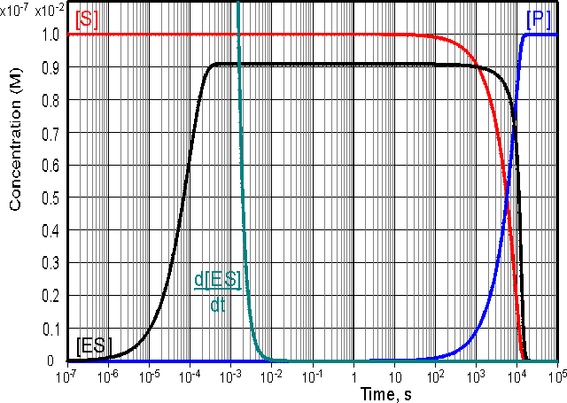

|
|
Simple kinetics of enzyme action
Enzyme + Substrate where k+1, k-1 and k+2 are the respective rate constants, typically having values of 105 - 108 M−1 s−1, 1 - 104 s−1 and 1 - 105 s−1 respectively; the sign of the subscripts indicating the direction in which the rate constant is acting. For the sake of simplicity the reverse reaction concerning the conversion of product to substrate is not included in this scheme. This is allowable (1) at the beginning of the reaction when there is no, or little, product present, or (2) when the reaction is effectively irreversible. Reversible reactions are dealt with in more detail later in this chapter. The rate of reaction (v) is the rate at which the product is formed. where [ ] indicates the molar concentration of the material enclosed (i.e., [ES] is the concentration of the enzyme-substrate complex). The rate of change of the concentration of the enzyme-substrate complex equals the rate of its formation minus the rate of its breakdown, forwards to give product or backwards to regenerate substrate. therefore: (1.2) During the course of the reaction, the total enzyme at the beginning of the reaction ([E]0, at zero time) is present either as the free enzyme ([E]) or the ES complex ([ES]). i.e. [E]0 = [E] + [ES] (1.3) therefore: (1.4) Gathering terms together,
this gives: (1.5) The differential equation 1.5 is difficult to handle, but may be greatly simplified if it can be assumed that the left hand side is equal to [ES] alone. This assumption is valid under the sufficient but unnecessarily restrictive steady state approximation that the rate of formation of ES equals its rate of disappearance by product formation and reversion to substrate (i.e., d[ES]/dt is zero). It is additionally valid when the condition: (1.6) is valid. This occurs during a substantial part of the reaction time-course over a wide range of kinetic rate constants and substrate concentrations and at low to moderate enzyme concentrations. The variation in [ES], d[ES]/dt, [S] and [P] with the time-course of the reaction is shown in Figure 1.2, where it may be seen that the simplified equation is valid throughout most of the reaction. 
Figure 1.2.
Computer simulation of the progress curves of d[ES]/dt (0 - 10−7 M
scale), [ES] (0 - 10−7 M scale), [S] (0 - 10−2 M
scale) and [P] (0 - 10−2 M scale) for a reaction
obeying simple Michaelis-Menten kinetics with k+1
= 106
M−1 s−1, k-1 = 1000 s−1,
k+2 =
10 s−1, [E]0 = 10−7 M and [S]0 = 0.01 M.
The simulation shows three distinct phases to the
reaction time-course, an initial transient phase which lasts for about a
millisecond followed by a longer steady state phase of about 30 minutes when
[ES] stays constant but only a small proportion of the substrate reacts. This is
followed by the final phase, taking about 6 hours during which the substrate is
completely converted to product. The Michaelis-Menten equation (below) is simply derived from equations 1.1 and 1.5, by substituting Km for . Km is known as the Michaelis constant with a value typically in the range 10−1 - 10−5 M. When k+2<<k-1, Km equals the dissociation constant (k-1/k+1) of the enzyme substrate complex. or, more simply where Vmax is the maximum rate of reaction, which occurs when the enzyme is completely saturated with substrate (i.e., when [S] is very much greater than Km, Vmax equals k+2[E]0, as the maximum value [ES] can have is [E]0 when [E]0 is less than [S]0). Equation 1.8 may be rearranged to show the dependence of the rate of reaction on the ratio of [S] to Km, and the rectangular hyperbolic nature of the relationship, having asymptotes at v = Vmax and [S] = -Km, (Vmax-v)(Km+[S])=VmaxKm (1.10) The substrate concentration in these equations is the actual concentration at the time and, in a closed system, will only be approximately equal to the initial substrate concentration ([S]0) during the early phase of the reaction. Hence, it is usual to use these equations to relate the initial rate of reaction to the initial, and easily predetermined, substrate concentration (Figure 1.3). This also avoids any problem that may occur through product inhibition or reaction reversibility (see later). Figure 1.3. A normalised plot of the initial rate (v0) against initial substrate concentration ([S]0) for a reaction obeying the Michaelis-Menten kinetics (equation 1.8). The plot has been normalised in order to make it more generally applicable by plotting the relative initial rate of reaction (v0/Vmax) against the initial substrate concentration relative to the Michaelis constant ([S]0/Km, more commonly referred to as b, the dimensionless substrate concentration). The curve is a rectangular hyperbola with asymptotes at v0 = Vmax and [S]0 = -Km. The tangent to the curve at the origin goes through the point (v0 = Vmax),([S]0 = Km). The ratio Vmax/Km is an important kinetic parameter which describes the relative specificity of a fixed amount of the enzyme for its substrate (more precisely defined in terms of kcat/Km). The substrate concentration, which gives a rate of half the maximum reaction velocity, is equal to the Km. It has been established that few enzymes follow the Michaelis-Menten equation over a wide range of experimental conditions. However, it remains by far the most generally applicable equation for describing enzymic reactions. Indeed it can be realistically applied to a number of reactions which have a far more complex mechanism than the one described here. In these cases Km remains an important quantity, characteristic of the enzyme and substrate, corresponding to the substrate concentration needed for half the enzyme molecules to bind to the substrate (and, therefore, causing the reaction to proceed at half its maximum rate) but the precise kinetic meaning derived earlier may not hold and may be misleading. In these cases the Km is likely to equal a much more complex relationship between the many rate constants involved in the reaction scheme. It remains independent of the enzyme and substrate concentrations and indicates the extent of binding between the enzyme and its substrate for a given substrate concentration, a lower Km indicating a greater extent of binding. Vmax clearly depends on the enzyme concentration and for some, but not all, enzymes may be largely independent of the specific substrate used. Km and Vmax may both be influenced by the charge and conformation of the protein and substrate(s) which are determined by pH, temperature, ionic strength and other factors. It is often preferable to substitute kcat for k+2, where Vmax = kcat[E]0, as the precise meaning of k+2, above, may also be misleading. kcat is also known as the turnover number as it represents the maximum number of substrate molecules that the enzyme can 'turn over' to product in a set time (e.g., the turnover numbers of a-amylase, glucoamylase and glucose isomerase are 500 s−1, 160 s−1 and 3 s−1 respectively; an enzyme with a relative molecular mass of 60000 and specific activity 1 U mg−1 has a turnover number of 1 s−1). The ratio kcat/Km determines the relative rate of reaction at low substrate concentrations, and is known as the specificity constant. It is also the apparent 2nd order rate constant at low substrate concentrations (see Figure 1.3), where (1.11) Many applications of enzymes involve open systems, where the substrate concentration remains constant, due to replenishment, throughout the reaction time-course. This is, of course, the situation that often prevails in vivo. Under these circumstances, the Michaelis-Menten equation is obeyed over an even wider range of enzyme concentrations than allowed in closed systems, and is commonly used to model immobilised enzyme kinetic systems (see Chapter 3). Enzymes have evolved by maximising kcat/Km (i.e., the specificity constant for the substrate) while keeping Km approximately identical to the naturally encountered substrate concentration. This allows the enzyme to operate efficiently and yet exercise some control over the rate of reaction. The specificity constant is limited by the rate at which the reactants encounter one another under the influence of diffusion. For a single-substrate reaction the rate of encounter between the substrate and enzyme is about 108 - 109 M−1 s−1. The specificity constant of some enzymes approach this value although the range of determined values is very broad (e.g., kcat/Km for catalase is 4 x 107 M−1 s−1, whereas it is 25 M−1 s−1 for glucose isomerase, and for other enzymes varies from less than 1 M−1 s−1 to greater than 108 M−1 s−1).
This page was established in 2004 and last updated by Martin
Chaplin |
![v = Vmax/(1 + Km/[S])](images/kineti14.gif)